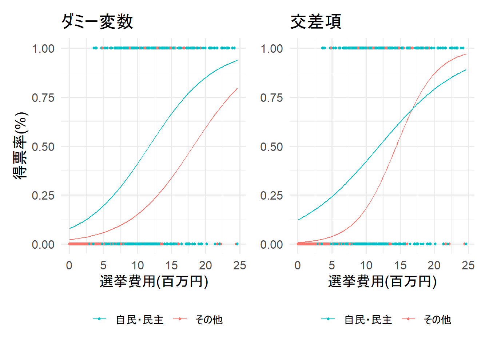
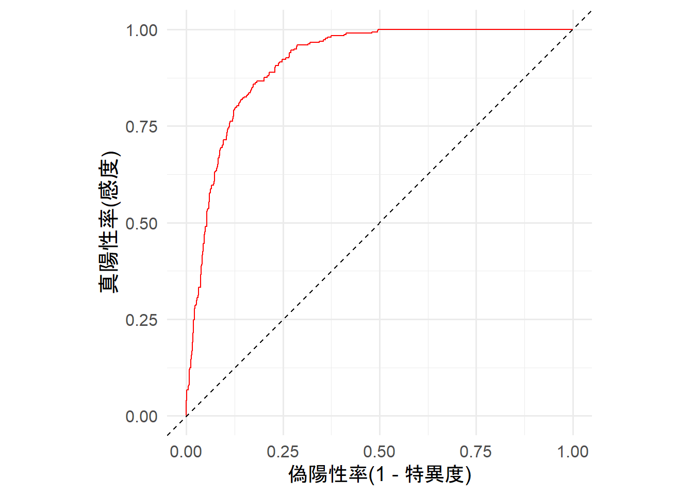
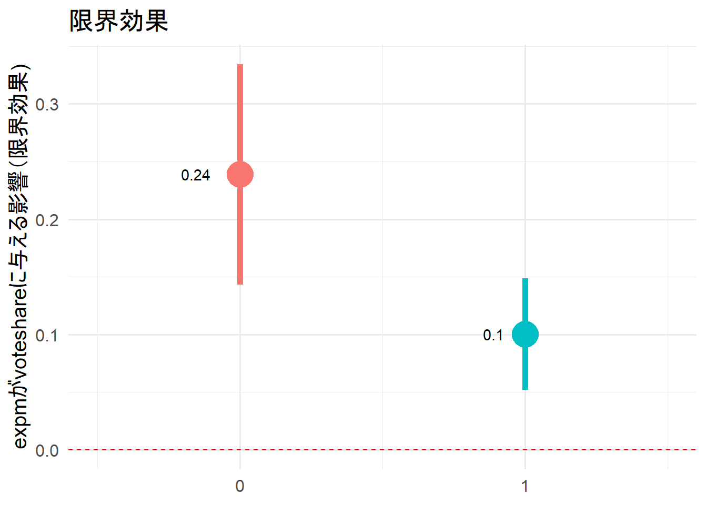
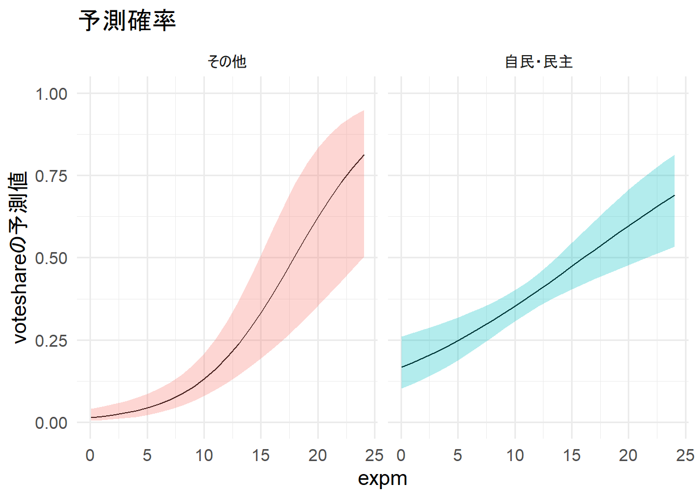
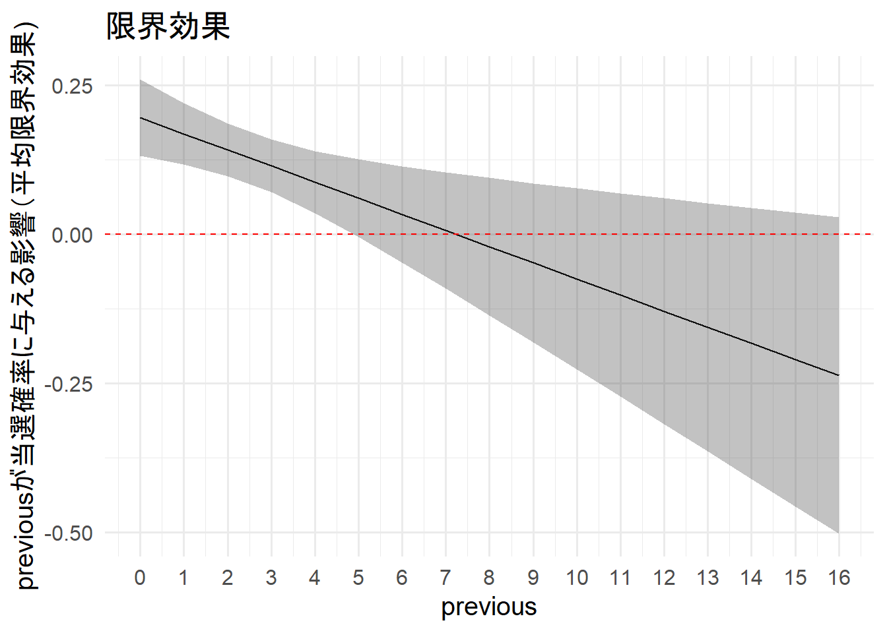
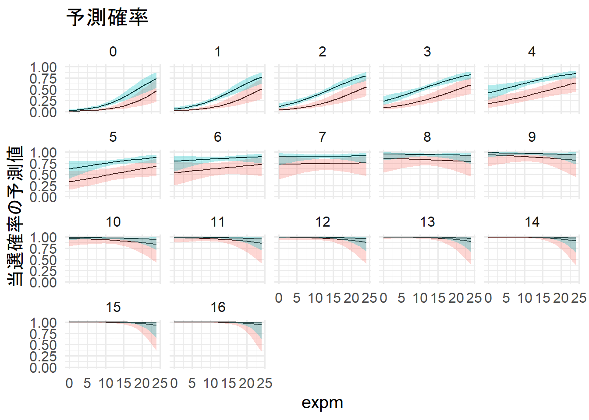

# 使用するパッケージ
library(tidyverse)
library(patchwork)
library(magrittr)
library(stargazer)
library(ROCR)
library(broom)
library(margins)
theme_set(theme_minimal(base_family = 15))
# ggplot2 の theme をあらかじめ設定しておく
theme_set(theme_minimal(base_size = 15))データはこちら
data <- read_csv("Data/House_of_Councilors_1996_2017.csv")今回使用するデータは、私のQiitaではお馴染みの衆院選データです。
data %<>%
dplyr::filter(year == 2005) %>%
dplyr::mutate("party_size" = if_else(party_jpn %in% c("自民党", "民主党"), 1, 0)) %>%
dplyr::select(smd, expm, previous, party_size) %>%
drop_na() %>%
as.data.frame()2005年の衆院選を対象とします。
また、ダミー変数を作成して変数選択を行いました。
naを持つ個体に関しては、全て排除しました。
stargazer(data,
type = "html",
summary.stat = c("n", "sd", "min", "mean", "max"))| Statistic | N | St. Dev. | Min | Mean | Max |
| smd | 985 | 0.460 | 0 | 0.303 | 1 |
| expm | 985 | 5.570 | 0.063 | 8.142 | 24.650 |
| previous | 985 | 2.684 | 0 | 1.922 | 16 |
| party_size | 985 | 0.493 | 0 | 0.587 | 1 |
| 変数名 | 内容 | 備考 |
|---|---|---|
| smd | 当落 | 0=落選、1=当選 |
| expm | 選挙費用 | 単位: 百万円 |
| previous | 当選回数 | |
| party_size | 政党規模 | 0 = その他、1 = 自民・民主 |

上記の図はダミー変数と交差項の回帰直線の違いを可視化したものだ。
交差項を使うと、調整変数が取る値によって、AME(平均限界効果)が異なることを捉えることができる、
model_1 <- glm(smd ~ expm + previous + party_size + expm:party_size, data, family = binomial(link = "logit"))stargazer(model_1,
type = "html",
style = "all2",
digits = 2,
align = T, # 中央揃え
keep.stat = c("n", "adj.rsq", "f"))| Dependent variable: | |
| smd | |
| expm | 0.24*** |
| (0.05) | |
| previous | 0.52*** |
| (0.05) | |
| party_size | 2.67*** |
| (0.63) | |
| expm:party_size | -0.14** |
| (0.05) | |
| Constant | -5.27*** |
| (0.57) | |
| Observations | 985 |
| Note: | p<0.1; p<0.05; p<0.01 |
このままでは解釈が難しいので、以下のようにオッズと当選確率を計算する。
こうすることで、分析結果の解釈を可能にする。
exp(model_1$coefficients) (Intercept) expm previous party_size expm:party_size
0.00513729 1.26983976 1.67619411 14.37886256 0.87068851 Constant: 全説明変数が0の時に「応答変数が1になる」オッズ
estimate: 他の説明変数を平均値で固定し、変数を1単位増やしたときに「応答変数が1になる」オッズ
1 / (1 + exp(-model_1$coefficients)) (Intercept) expm previous party_size expm:party_size
0.005111033 0.559440266 0.626335027 0.934975685 0.465437460 estimate: 他の説明変数を平均値で固定し、その変数を1単位増やしたときに「応答変数が1になる」確率
このようにオッズや確率に変換することで、解釈可能性を上げることができるが、 これでもまだ、直感的に理解することは難しい。そのため、限界効果や当選確率の可視化が重要になる。
roc <- model_1 %>%
predict(type = "response") %>%
ROCR::prediction(labels = data$smd == 1) %>%
performance("tpr", "fpr")
df_roc <- data.frame(tpr = roc@y.values[[1]], fpr = roc@x.values[[1]])
ggplot(df_roc, aes(x = fpr, y = tpr)) +
geom_line(color = "red") +
geom_abline(intercept = 0, slope = 1, linetype = "dashed") +
scale_linetype_discrete(name = "") +
scale_color_discrete(name = "") +
coord_fixed() +
labs(x = "偽陽性率(1 - 特異度)", y = "真陽性率(感度)")
ROC曲線が対角線より左上にあり、(0, 1)に向かって線が良く伸びていることから、モデルの当てはまりは良さそう。
目視では判断が難しい場合はAUCを算出する。
auc <- model_1 %>%
predict(type = "response") %>%
ROCR::prediction(labels = data$smd == 1) %>%
performance("auc")
auc@y.values[[1]][1] 0.914305AUC値は0.5～1までの値を取る。1に近いほどモデルの当てはまりが良い。
今回のモデルのAUCは0.914305で非常に当てはまりが良い。
margins_1 <- summary(margins(model_1,
at = list(party_size = 0:1),
type = "link")) %>%
dplyr::filter(factor == "expm") %>%
as.data.frame()margins_1 %>%
ggplot(aes(x = party_size, y = AME)) +
geom_pointrange(aes(ymin = lower, ymax = upper,
color = as.factor(party_size)),
size = 2,
show.legend = F) +
geom_hline(yintercept = 0,
linetype = 2,
color = "red") +
geom_text(aes(label = round(AME, 2)),
hjust = 2) +
scale_x_continuous(breaks = c(0, 1),
labels = c("0", "1")) +
labs(x = NULL,
y = "expmがvoteshareに与える影響（限界効果)",
title = "限界効果") +
coord_trans(xlim = c(-0.5, 1.5))
表では解釈が難しかったが、このように図に表すと分かりやすいだろう。
両方とも赤い点線を跨いでいないことから、
調整変数の値によってexpmが当選確率に与える影響が異なることが統計的に有意であったとわかった。
expmが1単位増加すると、party_sizeが0の場合は平均して0.24%pt、party_sizeが1の場合は平均して0.1%pt増加する。
prediction_1 <- function(x){
model_1 %>%
predict(newdata = data.frame(expm = min(data$expm):max(data$expm),
previous = mean(data$previous),
party_size = x),
se.fit = TRUE) %>%
as.data.frame() %>%
mutate(ll = fit + qnorm(0.025) * se.fit,
ul = fit + qnorm(0.975) * se.fit,
estimate = (1 / (1 + exp(-fit))),
lower = (1 / (1 + exp(-ll))),
upper = (1 / (1 + exp(-ul))),
expm = min(data$expm):max(data$expm),
party_size = x)
}
pred_1 <- lapply(X = 0:1, FUN = prediction_1)
pred_1 %<>% bind_rows(pred_1[1], pred_1[2])
pred_1 %>%
ggplot(aes(x = expm, y = estimate,
fill = as.factor(party_size))) +
geom_line() +
geom_ribbon(aes(ymin = lower, ymax = upper),
alpha =.3,
show.legend = F) +
lims(y = c(0, 1)) +
labs(y = "voteshareの予測値", title = "予測確率") +
facet_wrap(~ party_size,
labeller = as_labeller(c(`0` = "その他",
`1` = "自民・民主"))) 
expmが増加すると、当選確率も増加する。また、その他の政党のほうがexpmが上昇した際の当選確率の上がり方が顕著である。
その他の政党の場合、exppmが10を超えたあたりから急激に影響が強くなるようだ。
ただ、当選確率が50%になるのは自民・民主のほうが早い。このことから、自民・民主の候補者はより安価に当選が狙えるようだ。
model_2 <- glm(smd ~ expm + previous + party_size + expm:previous, data, family = binomial(link = "logit"))stargazer(model_2,
type = "html",
style = "all2",
digits = 2,
align = T, # 中央揃え
keep.stat = c("n", "adj.rsq", "f"))| Dependent variable: | |
| smd | |
| expm | 0.20*** |
| (0.03) | |
| previous | 0.83*** |
| (0.13) | |
| party_size | 1.18*** |
| (0.28) | |
| expm:previous | -0.03*** |
| (0.01) | |
| Constant | -4.85*** |
| (0.41) | |
| Observations | 985 |
| Note: | p<0.1; p<0.05; p<0.01 |
このままでは解釈できないので、以下のようにオッズと当選確率を計算する。
こうすることで、分析結果の解釈を可能にする。
exp(model_2$coefficients) (Intercept) expm previous party_size expm:previous
0.007808072 1.216156367 2.296635151 3.268965246 0.973296417 Constant: 全説明変数が0の時に「応答変数が1になる」オッズ
estimate: 他の説明変数を平均値で固定し、変数を1単位増やしたときに「応答変数が1になる」オッズ
1 / (1 + exp(-model_2$coefficients)) (Intercept) expm previous party_size expm:previous
0.007747579 0.548768302 0.696660396 0.765751197 0.493233763 estimate: 他の説明変数を平均値で固定し、その変数を1単位増やしたときに「応答変数が1になる」確率
このようにオッズや確率に変換することで、解釈可能性を上げることができるが、 これでもまだ、直感的に理解することは難しい。そのため、限界効果や当選確率の可視化が重要になる。
roc <- model_2 %>%
predict(type = "response") %>%
ROCR::prediction(labels = data$smd == 1) %>%
performance("tpr", "fpr")
df_roc <- data.frame(tpr = roc@y.values[[1]], fpr = roc@x.values[[1]])
ggplot(df_roc, aes(x = fpr, y = tpr)) +
geom_line(color = "red") +
geom_abline(intercept = 0, slope = 1, linetype = "dashed") +
scale_linetype_discrete(name = "") +
scale_color_discrete(name = "") +
coord_fixed() +
labs(x = "偽陽性率(1 - 特異度)", y = "真陽性率(感度)")ROC曲線が対角線より左上にあり、(0, 1)に向かって線が良く伸びていることから、モデルの当てはまりは良さそう。
目視では判断が難しい場合はAUCを算出する。
auc <- model_2 %>%
predict(type = "response") %>%
ROCR::prediction(labels = data$smd == 1) %>%
performance("auc")
auc@y.values[[1]][1] 0.9112912AUC値は0.5～1までの値を取る。1に近いほどモデルの当てはまりが良い。
今回のモデルのAUCは0.9112912で非常に当てはまりが良い。
margins_2 <- summary(margins(model_2,
at = list(previous = 0:16),
type = "link")) %>%
dplyr::filter(factor == "expm") %>%
as.data.frame()margins_2 %>%
ggplot(aes(x = previous, y = AME)) +
geom_line() +
geom_ribbon(aes(ymin = lower, ymax = upper),
alpha = .3) +
geom_hline(yintercept = 0,
linetype = 2,
color = "red") +
scale_x_continuous(breaks = seq(0,16, legth = 17)) +
labs(x = "previous",
y = "previousが当選確率に与える影響（平均限界効果)",
title = "限界効果")
exppvが当選確率に与える影響は、previousが4回までの候補者は統計的に有意であるとわかった。
また、徐々にexpmの影響が小さくなっていき、最終的に影響が無くなるようだ。
新人候補者ほど選挙費用はケチらないほうがよいとわかる。
prediction_2_0 <- function(x){
model_2 %>%
predict(newdata = data.frame(expm = min(data$expm):max(data$expm),
previous = x,
party_size = 0),
se.fit = TRUE) %>%
as.data.frame() %>%
mutate(ll = fit + qnorm(0.025) * se.fit,
ul = fit + qnorm(0.975) * se.fit,
estimate = (1 / (1 + exp(-fit))),
lower = (1 / (1 + exp(-ll))),
upper = (1 / (1 + exp(-ul))),
expm = min(data$expm):max(data$expm),
previous = x,
party_size = 0)
}
pred_2_0 <- lapply(X = 0:16, FUN = prediction_2_0) %>% bind_rows()prediction_2_1 <- function(x){
model_2 %>%
predict(newdata = data.frame(expm = min(data$expm):max(data$expm),
previous = x,
party_size = 1),
se.fit = TRUE) %>%
as.data.frame() %>%
mutate(ll = fit + qnorm(0.025) * se.fit,
ul = fit + qnorm(0.975) * se.fit,
estimate = (1 / (1 + exp(-fit))),
lower = (1 / (1 + exp(-ll))),
upper = (1 / (1 + exp(-ul))),
expm = min(data$expm):max(data$expm),
previous = x,
party_size = 1)
}
pred_2_1 <- lapply(X = 0:16, FUN = prediction_2_1) %>% bind_rows()pred_2 <- bind_rows(pred_2_0, pred_2_1)pred_2 %>%
ggplot(aes(x = expm, y = estimate,
fill = as.factor(party_size))) +
geom_line() +
geom_ribbon(aes(ymin = lower, ymax = upper),
alpha =.3,
show.legend = F) +
lims(y = c(0, 1)) +
labs(y = "当選確率の予測値", title = "予測確率") +
facet_wrap(~ previous) +
theme(legend.position = "none")
previousが6を超えるとexpmに関わらず当選確率が高い。
また、previousが7を超えたあたりからexpmの効果が無くなっていることが分かる。
この記事のコードをまとめたものはGithubにあります。